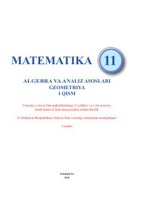

1A11-sinf uchun matematika va algebra fanidan rasmiy davlat darsligi.
Ushbu darslik umumiy o'rta ta'lim maktablarining 11-sinflari va o'rta maxsus, kasb-hunar ta'limi muassasalari uchun mo'ljallangan bo'lib, algebra va analiz asoslari bo'yicha nazariy bilimlar va amaliy mashqlarni o'z ichiga oladi. Kitobda hosila va uning tatbiqlari, o'zgaruvchi miqdorlar orttirmalarining nisbati kabi mavzular batafsil tushuntirilgan.